Round 284. "all s need work, mostly spacing work but also the bottom needs to be slightly bigger than the top." Round 283 narrowed the letter by 38 units when the head came back to its drawn reach, and the bearings were never re-fitted to that: measured in two dimensions against the rest of the lowercase, the roman s stood at 0.072 em on its right and 0.090 on its left where the lowercase median is 0.106, the tightest letter in the alphabet on both flanks. Its bearings take +34 and +16; the italic’s left takes +12, its foot’s forward corner having hung under the previous letter since round 276. On the terminals, round 283’s flat rule made the foot half again the head’s ink; the head’s size is now solved per weight so the foot carries 1.12 of it, which is what the pen alone already gives at the heavy weights. Before (round 283) then after, native pixels.
| font | s right, before | after | s left, before | after | lowercase median |
|---|---|---|---|---|---|
| roman 400 | 0.072 | 0.103 | 0.090 | 0.111 | 0.108 |
| italic 400 | 0.101 | 0.103 | 0.094 | 0.105 | 0.098 |
The tightest roman pairs move with it: st 0.062 → 0.094, so 0.069 → 0.100, sa 0.071 → 0.103, es 0.075 → 0.092. In the italic the tight three lift and the two loosest stay under 0.13: is 0.074 → 0.084, as 0.086 → 0.095, rs 0.118 → 0.129.
| font | head size, x the foot | head end | foot end | foot ink, x the head’s |
|---|---|---|---|---|
| roman 200 | 0.959 | 43.8 | 45.6 | 1.120 |
| roman 400 | 0.983 | 67.9 | 69.0 | 1.120 |
| roman 700 | 1.000 | 118.8 | 118.8 | 1.133 |
| roman 900 | 1.000 | 146.2 | 146.2 | 1.158 |
At equal end widths the foot is already the bigger mark, by 3% at the 200 and 16% at the 900, because the pen runs wider where the foot leaves the bowl and the 28-degree face crosses each stroke at its own angle. So the solve takes a little off the head at the light weights and nothing at all at the 700 and the 900. Round 283’s flat 0.85 made the ratio 1.49 and 1.55, which is a difference rather than a slight one. The italic solves the same way.
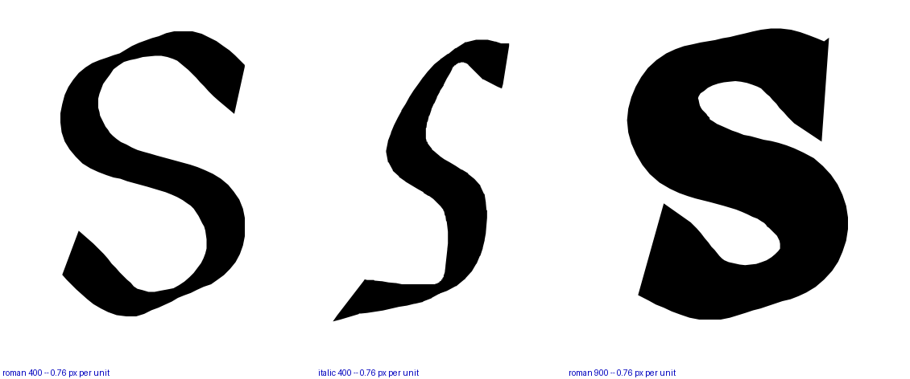
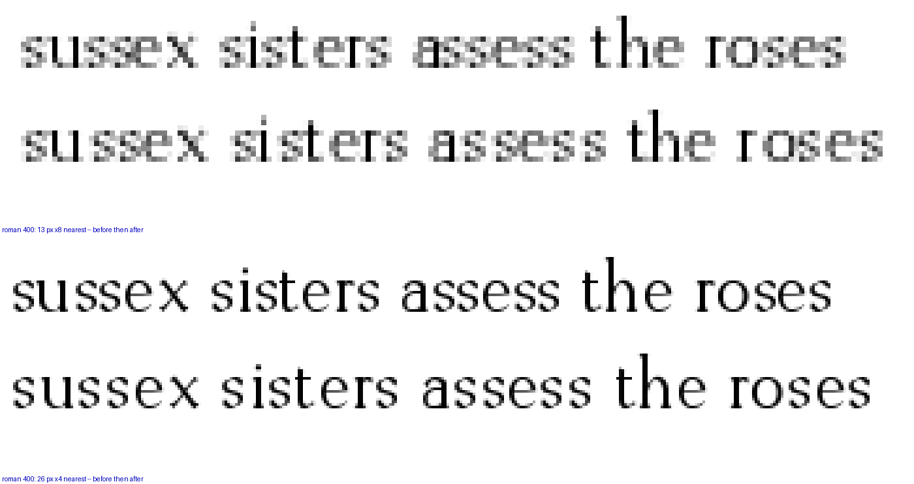
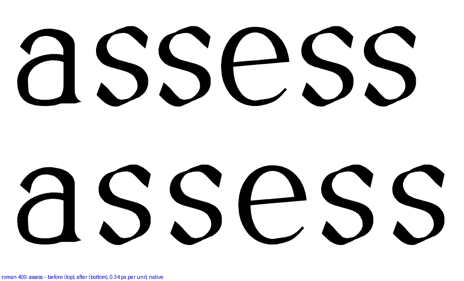
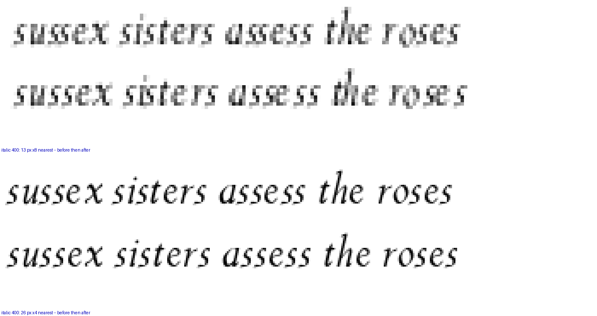
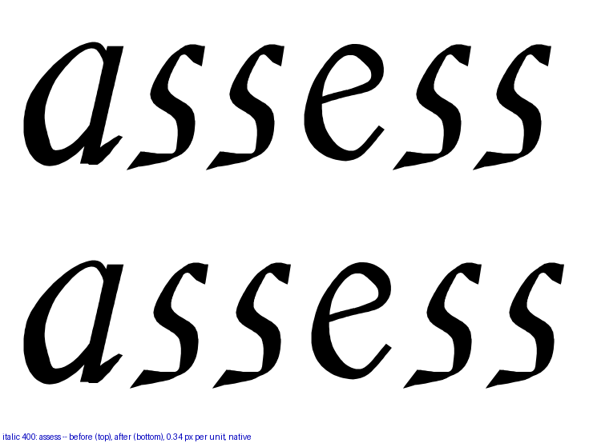
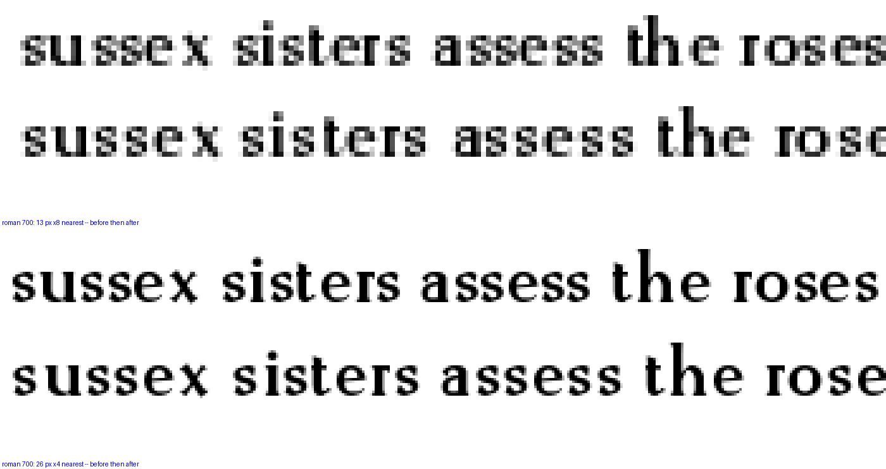
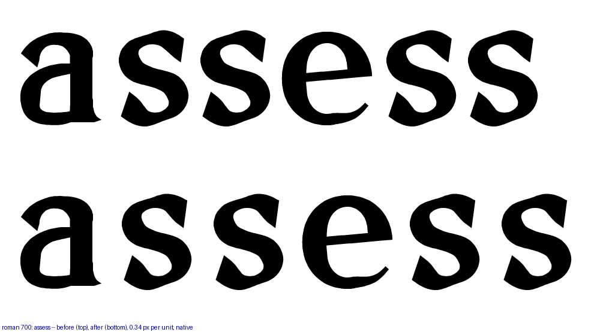
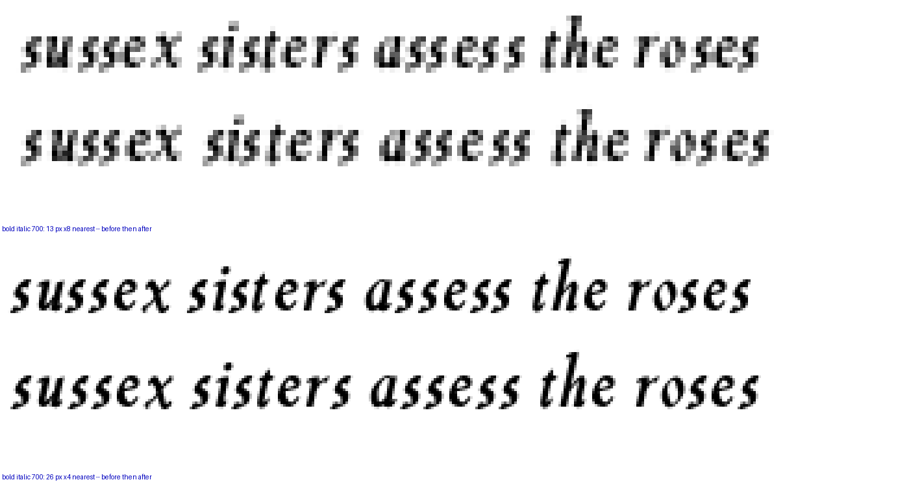
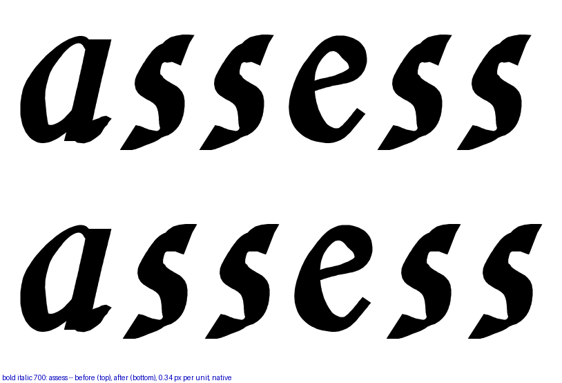
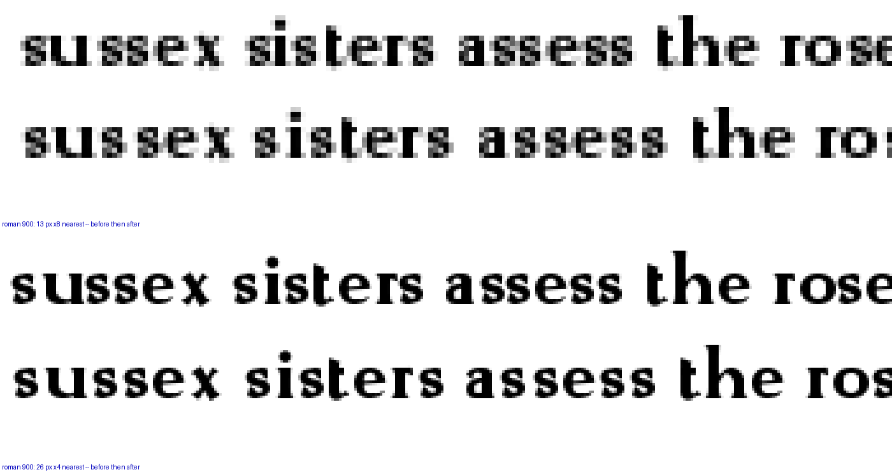
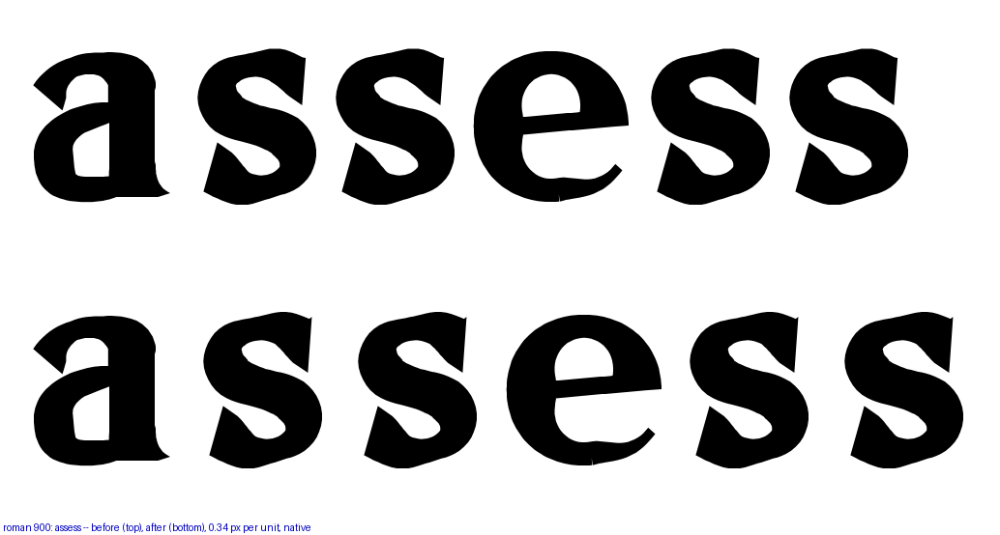
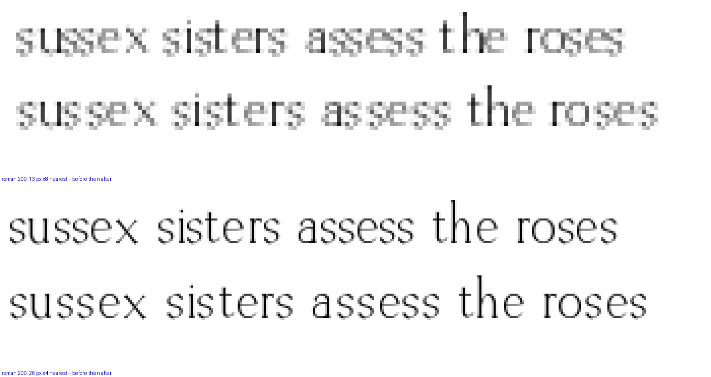